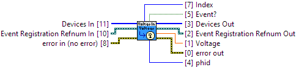

error in can accept error information wired from VIs previously called.
The most recent voltage value the channel has measured will be reported in this event, which occurs when the DataInterval has elapsed.
VoltageChangeTrigger has been set to a non-zero value, the VoltageChange event will not occur until the voltage has changed by at least the VoltageChangeTrigger value.SENSOR_TYPE_VOLTAGE, this event will not fire.
Device Support:1011_0 (ver: 100, 101, 102, 103) Voltage Input : Supported
1013_0 (ver: 800, 811, 820) Voltage Input : Supported
1013_0 (ver: 821, 823) Voltage Input : Supported
1018_0 (ver: 824, 825, 826) Voltage Input : Supported
1018_1 (ver: 826) Voltage Input : Supported
1019_0 (ver: 826) Voltage Input : Supported
1070_0 (ver: 826) Voltage Input : Supported
1010_0 (ver: 903, 904) Voltage Input : Supported
1018_2 (ver: 900, 901, 902, 903, 904) Voltage Input : Supported
1019_1 (ver: 903, 904) Voltage Input : Supported
1072_0 (ver: 903) Voltage Input : Supported
1073_0 (ver: 904) Voltage Input : Supported
1048_0 (ver: 100, 101, 102) Voltage Input : Supported
1051_0 (ver: 200, 201, 202) Voltage Input : Supported
1051_1 (ver: 300) Voltage Input : Supported
1051_2 (ver: 400, 401, 402) Voltage Input : Supported
1058_0 (ver: 100, 101) Voltage Input : Supported
1065_0 (ver: 100, 101) Voltage Input : Supported
1065_1 (ver: 100, 101) Voltage Input : Supported
1065_0 (ver: 100, 101) Supply Voltage Sensor : Supported
1065_1 (ver: 100, 101) Supply Voltage Sensor : Supported
1202_0 (ver: 100) Voltage Input : Supported
1203_0 (ver: 100) Voltage Input : Supported
1202_0 (ver: 120, 121) Voltage Input : Supported
1202_1 (ver: 123, 124) Voltage Input : Supported
1203_0 (ver: 120, 121) Voltage Input : Supported
1203_1 (ver: 123, 124) Voltage Input : Supported
1202_2 (ver: 200, 201, 202, 203, 204) Voltage Input : Supported
1203_2 (ver: 200, 201, 202, 203, 204) Voltage Input : Supported
HUB0000_0 (ver: 117, 118, 119) Voltage Input : Supported
SBC3003_0 (ver: 101, 102) Voltage Input : Supported
HUB0000_0 (ver: 121) Voltage Input : Supported
HUB5000_0 (ver: 102) Voltage Input : Supported
SBC3003_0 (ver: 108) Voltage Input : Supported
ADP1000_0 (ver: 104) Voltage Input : Supported
DAQ1000_0 (ver: 102, 103) Voltage Input : Supported
DAQ1000_0 (ver: 110) Voltage Input : Supported
DAQ1400_0 (ver: 112) Voltage Input : Supported
SAF1000_0 (ver: 101, 102) Voltage Sensor : Supported
TMP1100_0 (ver: 103, 105) Voltage Input : Supported
TMP1101_0 (ver: 104, 106) Voltage Input : Supported
VCP1000_0 (ver: 100) Voltage Input : Supported
VCP1001_0 (ver: 100) Voltage Input : Supported
VCP1002_0 (ver: 106) Voltage Input : Supported
|
|
error in (no error) error in can accept error information wired from VIs previously called. |
|
|
status status is TRUE (X) if an error occurred or FALSE (checkmark) to indicate a warning or that no error occurred. Right-click the error in control on the front panel and select Explain Error or Explain Warning from the shortcut menu for more information about the error. |
|
|
code code is the error or warning code. Right-click the error in control on the front panel and select Explain Error or Explain Warning from the shortcut menu for more information about the error. |
|
|
source source describes the origin of the error or warning. Right-click the error in control on the front panel and select Explain Error or Explain Warning from the shortcut menu for more information about the error. |
|
|
Devices In A list of devices registered for the same type of event |
|
|
Device In Device # Identification |
|
|
Event Registration Refnum In Event # Identification |
|
|
error out error out passes error or warning information out of a VI to be used by other VIs. |
|
|
status status is TRUE (X) if an error occurred or FALSE (checkmark) to indicate a warning or that no error occurred. Right-click the error out indicator on the front panel and select Explain Error or Explain Warning from the shortcut menu for more information about the error. |
|
|
code code is the error or warning code. Right-click the error out indicator on the front panel and select Explain Error or Explain Warning from the shortcut menu for more information about the error. |
|
|
source source string describes the origin of the error or warning. Right-click the error out indicator on the front panel and select Explain Error or Explain Warning from the shortcut menu for more information about the error. |
|
|
Event? Returns TRUE if the event has executed, or FALSE otherwise. |
|
|
Devices Out Same as Devices In |
|
|
Device Out Same as Device In |
|
|
Index The index of the device that triggered the event within the Devices In array. |
|
|
Voltage Measured voltage |
|
|
phid Device # Identification of the device that triggered the event. |
|
|
Event Registration Refnum Out Same as Event Registration Refnum In |